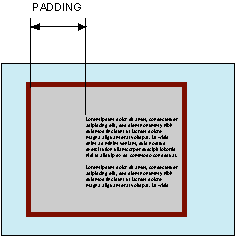

Устанавливает значение полей вокруг содержимого элемента. Полем называется расстояние от внутреннего края рамки элемента до воображаемого прямоугольника, ограничивающего его содержимое (рис. 1).

Рис. 1. Поле слева от текста
Свойство padding позволяет задать величину поля сразу для всех сторон элемента или определить ее только для указанных сторон.
Разрешается использовать одно, два, три или четыре значения, разделяя их между собой пробелом. Эффект зависит от количества значений и приведен в табл. 1.
| Число значений | Результат |
|---|---|
| 1 | Поля будут установлены одновременно от каждого края элемента. |
| 2 | Первое значение устанавливает поля от верхнего и нижнего края, второе — от левого и правого. |
| 3 | Первое значение задает поле от верхнего края, второе — одновременно от левого и правого края, а третье — от нижнего края. |
| 4 | Поочередно устанавливается поля от верхнего, правого, нижнего и левого края. |
Величину полей можно указывать в пикселах (px), процентах (%) или других допустимых для CSS единицах. Значение inherit указывает, что оно наследуется у родителя. При указании поля в процентах, значение считается от ширины родителя элемента.